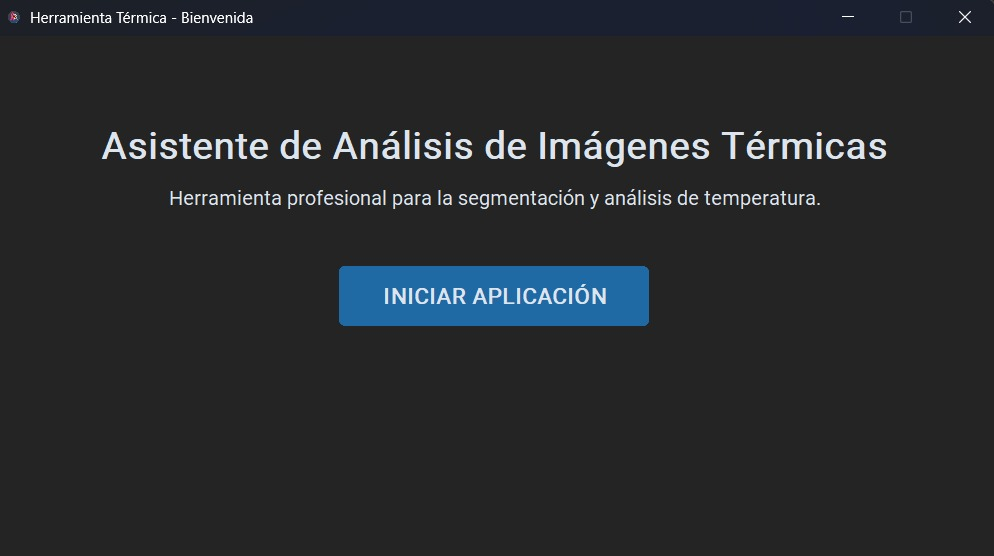
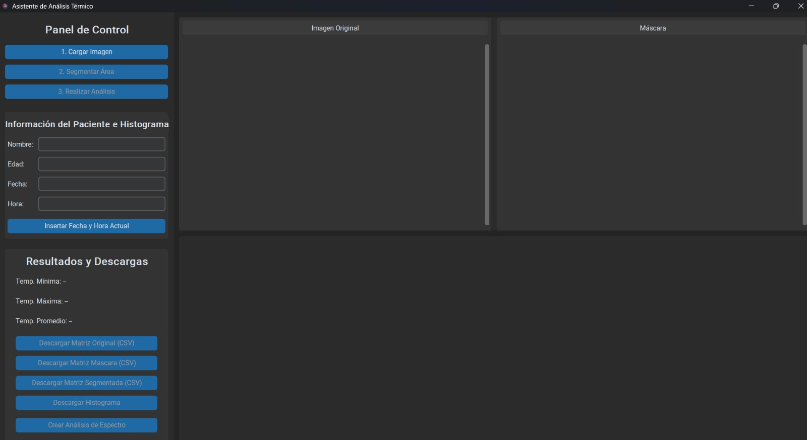
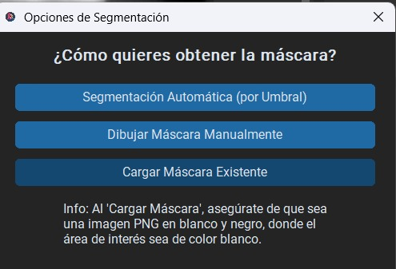
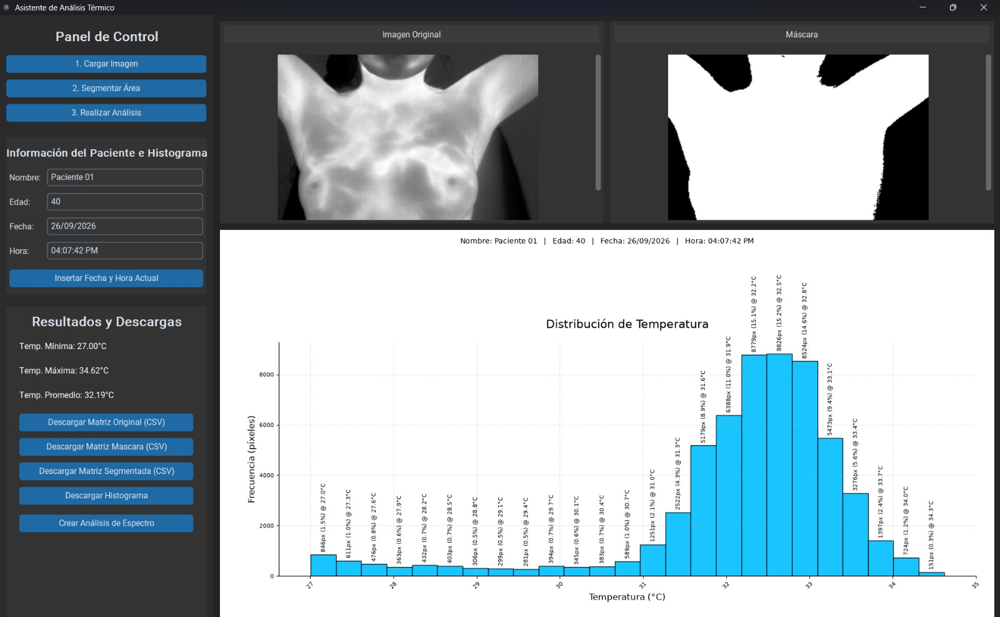
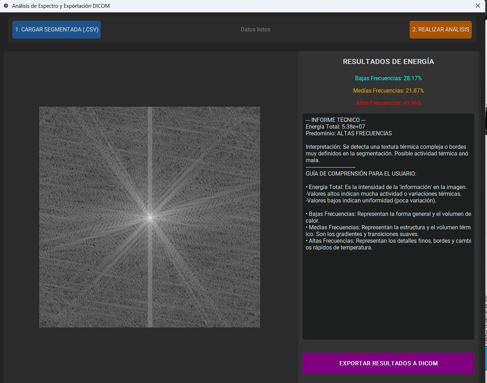
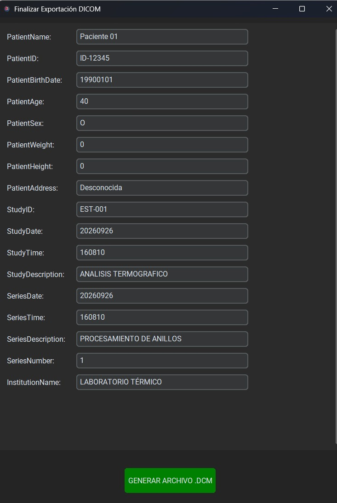

GOOGLE CLOUD
Generative AI
Modelos de lenguaje, inteligencia artificial generativa y soluciones cloud.
INGENIERO EN COMPUTACIÓN · UAZ
Ingeniero en Computación enfocado en ciberseguridad, redes, desarrollo de software, sistemas embebidos y tecnologías cloud.
miguel@portfolio:~
Aguila50@uaz:~$ █
PROFILE
Soy Ingeniero en Computación de la Universidad Autónoma de Zacatecas.
Mi formación combina conocimientos de programación, arquitectura de computadoras, redes, sistemas operativos, electrónica digital, sistemas embebidos y ciberseguridad.
Me interesa especialmente la creación de soluciones tecnológicas, infraestructura, seguridad informática y desarrollo de sistemas.
SKILLS
Fundamentos de seguridad informática.
Diseño, configuración y administración de infraestructuras de red.
Desarrollo de aplicaciones y soluciones utilizando diferentes lenguajes.
Desarrollo con microcontroladores, FPGA y sistemas digitales para IoT.
Bases de datos, análisis de información y tecnologías de procesamiento.
Manejo de sistemas Linux y control de versiones para proyectos.
EDUCATION
Formación en ciencias computacionales, arquitectura de computadoras, sistemas operativos, redes, ingeniería de software, electrónica digital y sistemas embebidos.
CERTIFICATIONS
Modelos de lenguaje, inteligencia artificial generativa y soluciones cloud.
Diagnóstico, mantenimiento y reparación de equipo de cómputo.
BigQuery, análisis de datos, transformación y modelado.
Ver certificadoPROJECTS
Desarrollo de una herramienta para el análisis de imágenes térmicas obtenidas mediante cámaras FLIR E6 y A300.
El sistema busca analizar patrones de actividad térmica de la mama como apoyo tecnológico para la investigación y detección.






Clic en la imagen para acercar
ESTABLISH CONNECTION
Estoy interesado en oportunidades relacionadas con tecnología, desarrollo, infraestructura, redes y ciberseguridad.